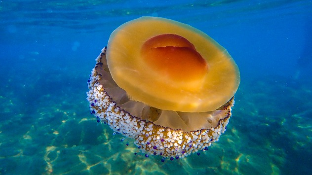

Медузы на Коста-Бланке — как всё поменялось за 3 года
МЕДУЗЫ НА КОСТА-БЛАНКЕ — КАК ВСЁ ПОМЕНЯЛОСЬ ЗА 3 ГОДА
Когда я приехала в 2022, не видела ни одной медузы. Всё лето купалась спокойно. С 2023 их появилась тьма — каждый год. Оказалось: норма.
Почему их больше
Средиземное потеплело, перелов рыбы убрал хищников, атлантические ветра приносят новых. По CSIC — будет больше.
🥚 Aurelia aurita — «медуза-яйцо»
Самая частая. Прозрачная 20-40 см, 4 розово-голубые подковки внутри. Почти не жалит.
🐉 Glaucus atlanticus (dragón azul)
Синий «дракон» 3 см. Моллюск, ест карабел и накапливает их жало — жалит сильно. В августе 2025 закрыли пляжи в Guardamar.
🚢 Carabela portuguesa
Крупный, щупальца до нескольких метров. Опасен. Закрывали Сан-Хуан и Постигет.
Как узнать что рядом
Приложение Medusapp — бесплатно, iOS/Android. Карта Испании в реальном времени. Зелёные точки — чисто.
Если ужалило
1. НЕ пресной водой — активирует жало
2. Морская вода — промыть
3. Уксус или сода на 15 минут
4. Сильная боль или сыпь — к врачу
Не работает: моча и лимон.
10:00👁 ~?